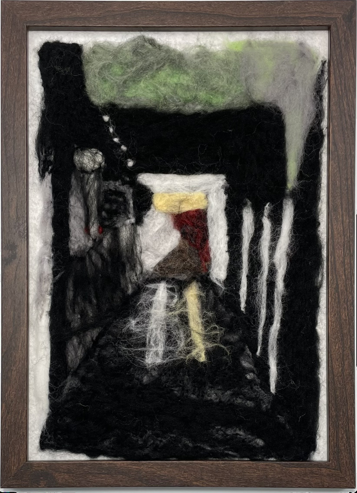

作品名稱：夜晚的廊道
作者姓名：何梓筠
作品主題：學校裡暗咪摸摸角落
作品敘述：晚上回家，尤其是冬天的時候，走廊都是特別暗。而我想說，大家的作品都附有青春陽光與活力，所以我就做了一個容易被遺忘的風景。屬實別有一番風味(⁎⁍̴̛ᴗ⁍̴̛⁎)。
When school is over, especially in winter, the corridors are always very dark. And I thought that that everyone's works are full of youth, sunshine and vitality, so I made a landscape that is easily forgotten.